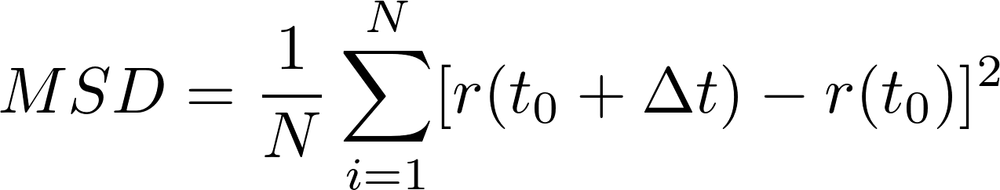
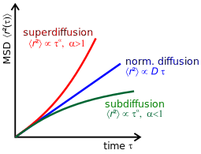

class: center, middle # Molecular Diffusion ## Mean Squared Displacement ### .red[Kutay B. Sezginel] #### [Home](https://kbsezginel.github.io) --- # Mean Squared Displacement Mean squared displacement is calculated using the formula below:  where N is the number of timesteps, r(t) is the position of particle at time t and dt is time delta. In order to understand the type of diffusion one can calculate MSD for different timedelta values and plot MSD vs dt. --- ### MSD vs dt The shape of the MSd vs dt curve gives information about the type of the motion of the particle. For true random walk (brownian motion) a linear line is expected. If there are other forces affecting the motion of the particle then different behaviours can be expected. <p align="center"></p> --- class: center, middle # <div class="font-effect-anaglyph">Thank you!<div> ### [Home](https://kbsezginel.github.io)